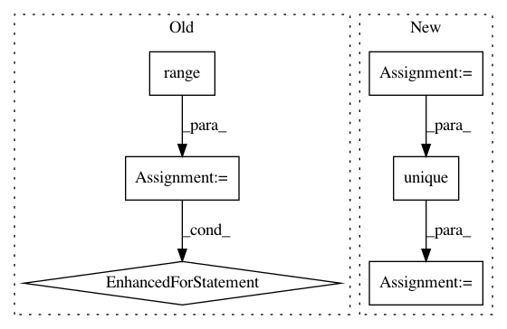

20f388cfe01635a2073723c5c4ffd6dd7a87fbb2,tensorflow_hub/tools/module_search/utils.py,,knn_errorrate_loo,#Any#Any#Any#,140
Before Change
cnt = 0
for i in range(np.shape(d)[0]):
cnt_i = 0
for j in range(k):
if y[i] != y[indices[i, j]]:
cnt_i += 1
if cnt_i >= k / 2.0:
cnt += 1
return float(cnt) / np.shape(d)[0]
After Change
for i in range(np.shape(d)[0]):
// Get max vote
labels = y[indices[i, :k]]
keys, counts = np.unique(labels, return_counts=True)
maxkey = keys[np.argmax(counts)]
if y[i] != maxkey:
cnt += 1
In pattern: SUPERPATTERN
Frequency: 3
Non-data size: 6
Instances
Project Name: tensorflow/hub
Commit Name: 20f388cfe01635a2073723c5c4ffd6dd7a87fbb2
Time: 2019-11-15
Author: cedric.renggli@gmail.com
File Name: tensorflow_hub/tools/module_search/utils.py
Class Name:
Method Name: knn_errorrate_loo
Project Name: tensorflow/hub
Commit Name: 20f388cfe01635a2073723c5c4ffd6dd7a87fbb2
Time: 2019-11-15
Author: cedric.renggli@gmail.com
File Name: tensorflow_hub/tools/module_search/utils.py
Class Name:
Method Name: knn_errorrate
Project Name: inferno-pytorch/inferno
Commit Name: 7ab028d2156122a80e7e638e56eafedb9e0d2425
Time: 2018-05-17
Author: steffen.wolf@iwr.uni-heidelberg.de
File Name: inferno/io/box/bsd500.py
Class Name: BSD500
Method Name: __init__